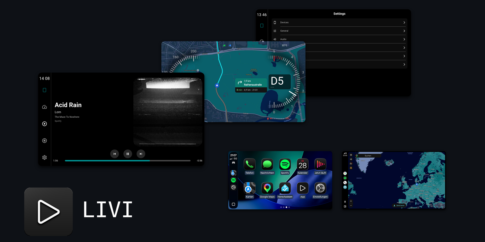


Apple Carplay & Android Auto on Linux
Standalone Apple Carplay and Android Auto head unit for Linux
LIVI - Linux In-Vehicle Infotainment - is an open-source project that provides a standalone Apple Carplay and Android Auto head unit. It runs on Linux desktops and ARM-based embedded platforms such as Raspberry Pi, with pre-built releases also available for macOS.
Features
- Apple CarPlay (wired & wireless) on Linux — requires an MFi authentication coprocessor
- Android Auto (wired) on all platforms
- Android Auto (wireless) on Linux
- Multi-session with live switching between connected phones
- Native, zero-copy video pipeline via GStreamer (hardware-accelerated decoding)
- Instrument cluster video stream support
- iAP2 turn-by-turn navigation data support
- Audio metadata and playback state integration
- Unified low-latency audio backend via GStreamer
- Microphone input support for voice assistants and phone calls
- Touchscreen and multi-touch support
- Multi-Display support with flexible routing
- Full non-touch navigation via D-Pad and button controls
- UI optimized for low-resolution OEM in-car displays
- Hardware-accelerated H.264, H.265, VP9 and AV1 (where the platform provides a decoder)
Wireless
Wireless sessions do not need a router. LIVI brings up its own Wi-Fi access point and the phone joins that, with Bluetooth carrying the pairing and the handover. Wireless CarPlay and wireless Android Auto are enabled separately, and a phone that has been paired before is picked up again on its own.
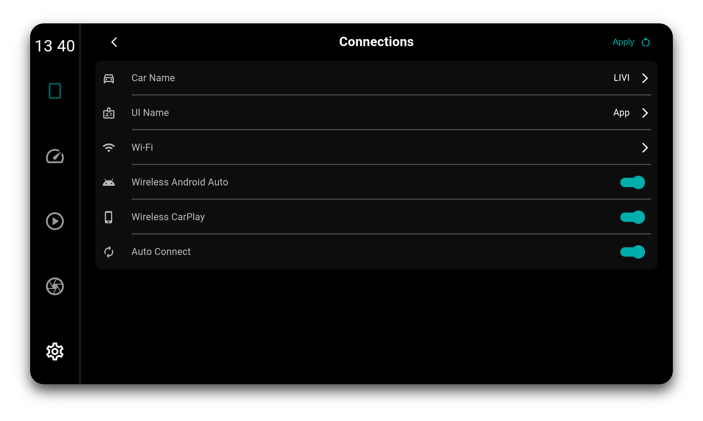
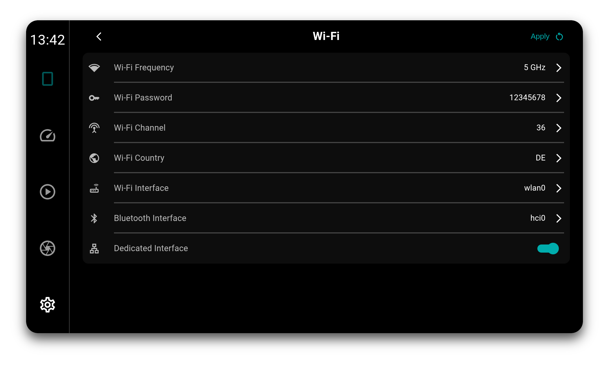
Multi-Session
Several phones can be connected at the same time, and all of them are tracked live: state, battery, signal, media metadata and turn-by-turn navigation stay current in the background, not just for the phone on screen. Switching is a handover rather than a reconnect, so bringing another phone forward takes milliseconds.
CarPlay and Android Auto can be mixed, over cable and Wi-Fi alike.
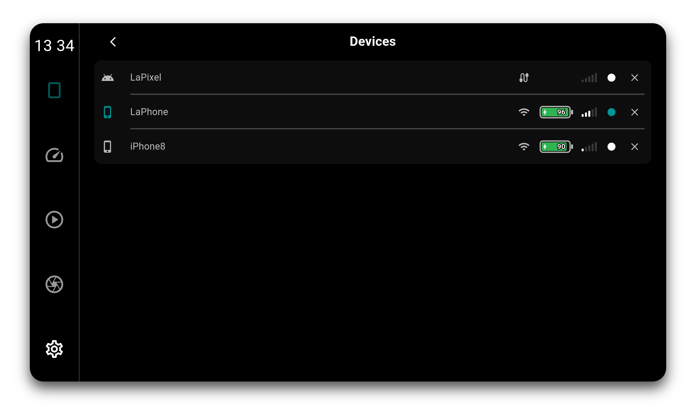
Display Calibration
Car displays are rarely colour accurate. Gamma, contrast and the red, green and blue channels can be corrected in software, applied by the compositor in a single pass over the finished frame. That covers the LIVI interface, the dashboards and the projected CarPlay or Android Auto video alike.
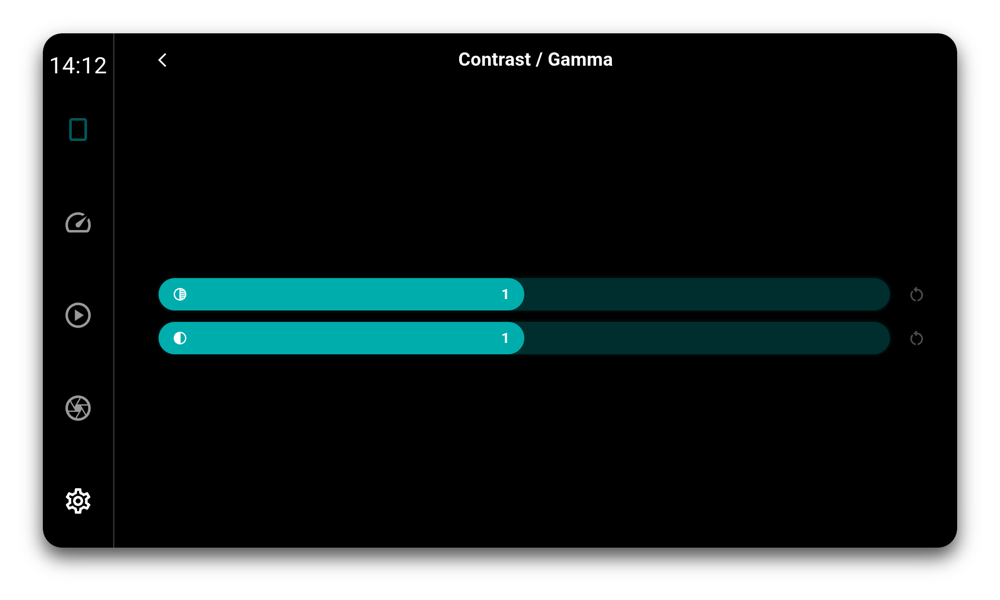
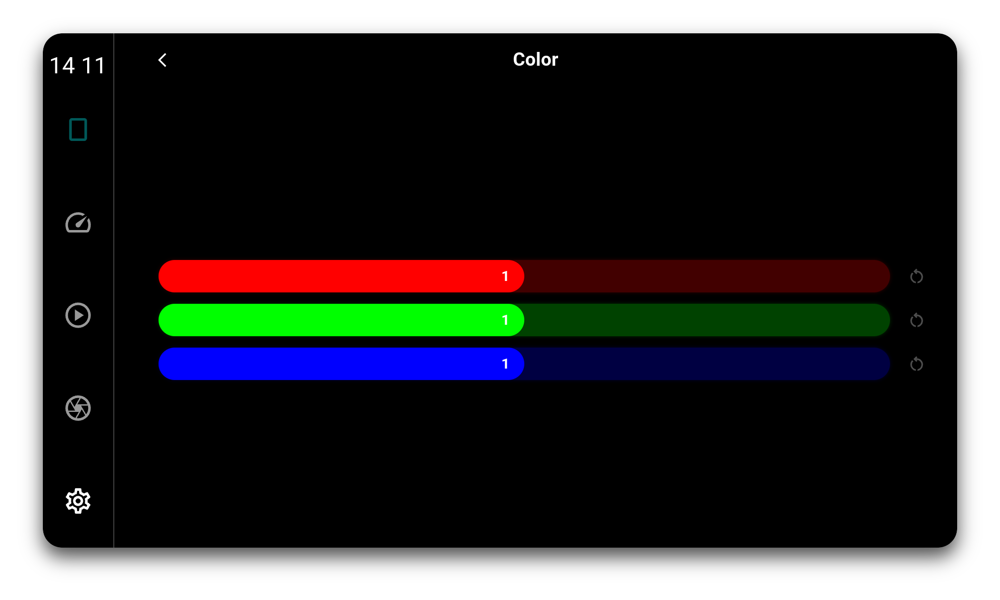
Multi-Display
LIVI can run as multiple windows at once. The Dash and Aux windows are freely assignable and can show the dashes, the reverse camera or the media player. Assignment is not exclusive: any feature can be shown on one, several, or all windows at the same time.
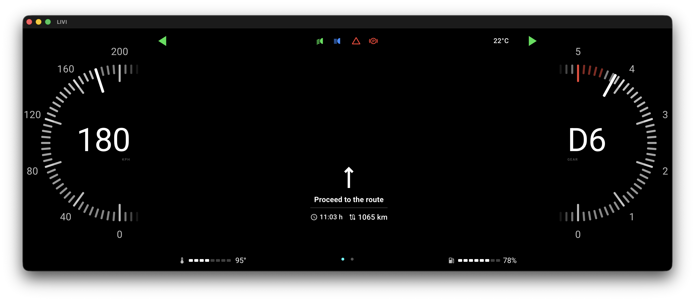
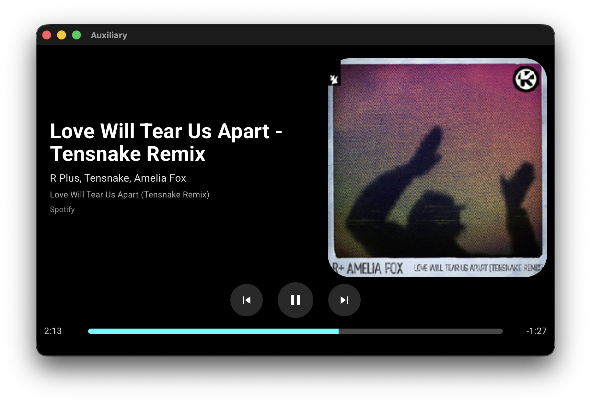
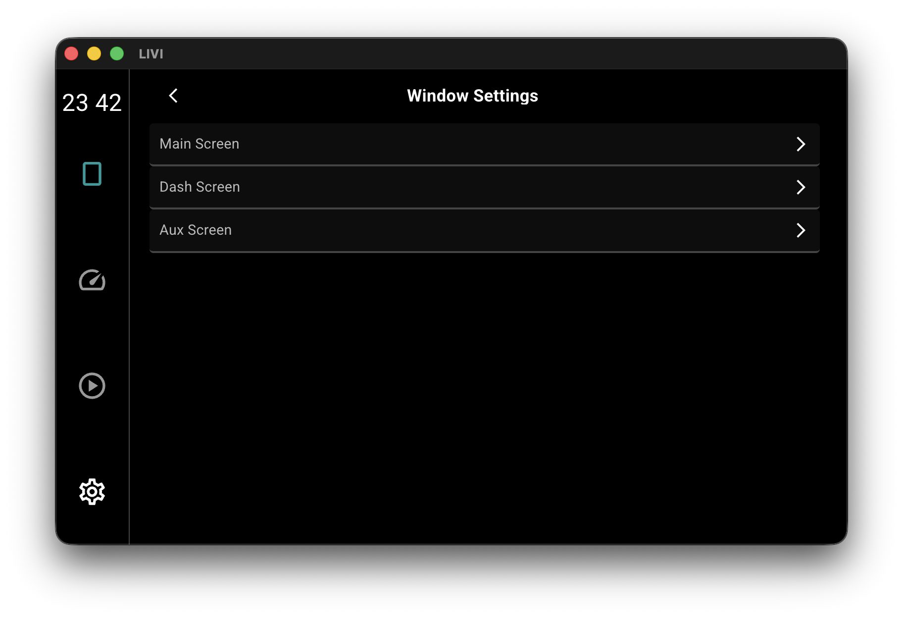
Supported Hardware
LIVI runs on:
- Linux desktops (Debian, Arch, Fedora, Ubuntu etc.)
- Raspberry Pi OS Trixie (Pi 4, Pi 5, CM4, CM5)
- Other arm64 and x64 Linux devices capable of running Electron (AppImage)
- Mac (arm and intel)
On Raspberry Pi 4 and 5, video is decoded on the SoC's hardware decoder and stays on the GPU end to end through the zero-copy GStreamer pipeline.
On Linux, both Apple CarPlay and Android Auto are supported natively. Native CarPlay (wired & wireless) requires an MFi authentication coprocessor (see below). Android Auto is native — wired on all platforms, wireless on Linux.
Installation
Pre-built binaries for Linux and macOS are available here: https://github.com/f-io/LIVI/releases
How it works
On Linux, LIVI implements the CarPlay and Android Auto accessory side natively. Wireless sessions run over LIVI's own Wi-Fi access point with Bluetooth pairing, wired sessions run directly over the USB cable. Video is decoded on the platform's hardware decoder and stays on the GPU end to end through the zero-copy GStreamer pipeline.
Native CarPlay authenticates against the phone with an Apple MFi coprocessor (see below). Android Auto needs no extra hardware.
MFi Authentication
Native CarPlay requires the accessory to authenticate against the phone using an Apple MFi authentication coprocessor. This is a hardware chip, it cannot be emulated in software, and LIVI does not ship or bypass it. You need a physical coprocessor (for example salvaged from a certified CarPlay accessory or sourced as a module) wired to the I²C bus of your board.
Without a coprocessor, native CarPlay is unavailable.
Build Environment


Screenshots
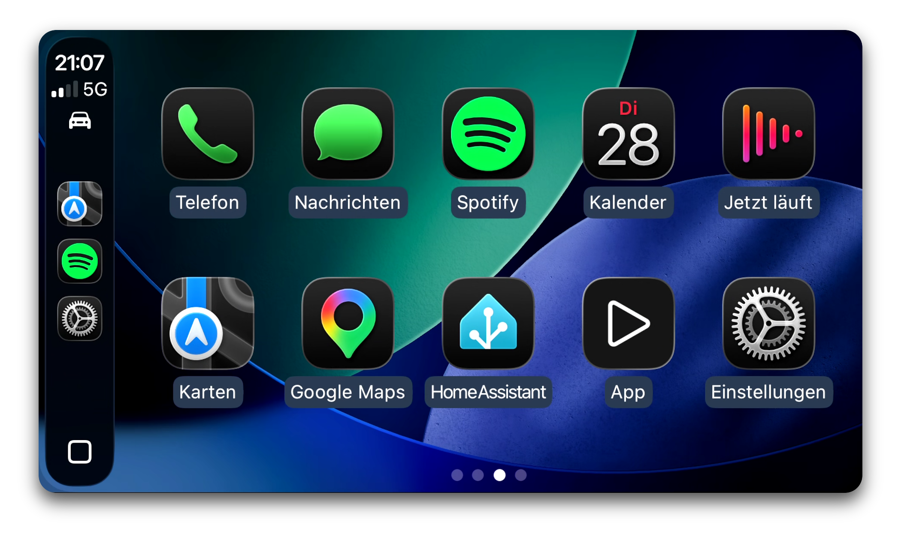
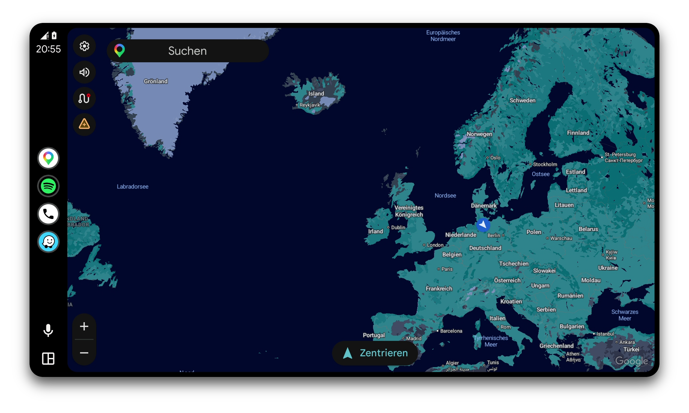
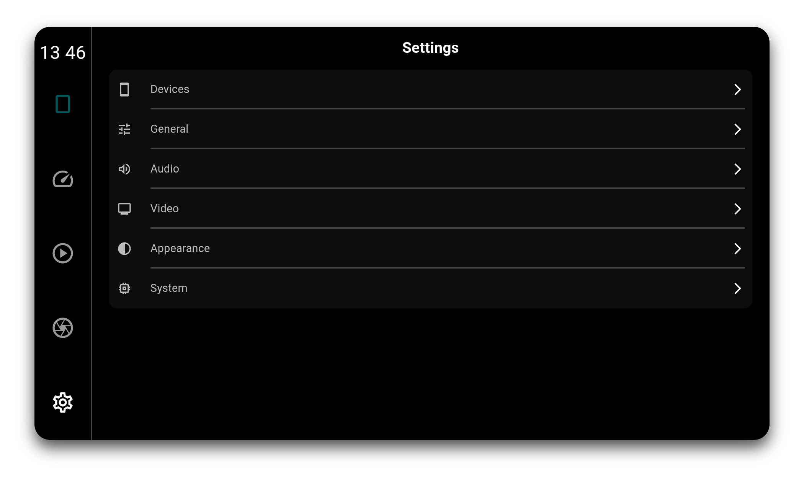
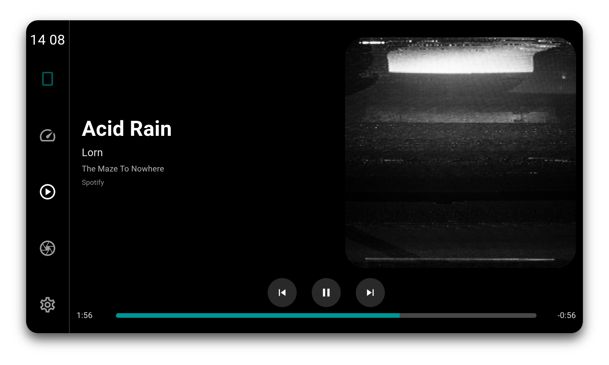
Documentation
Detailed setup steps can be found in the GitHub repository: https://github.com/f-io/LIVI
Contributing
Contributions are welcome. Issue reports, pull requests and hardware compatibility findings help improve the project.
Disclaimer
Apple and CarPlay are trademarks of Apple Inc.Android and Android Auto are trademarks of Google LLC.
This project is not affiliated with or endorsed by Apple or Google.
All product names, logos and brands are the property of their respective owners.